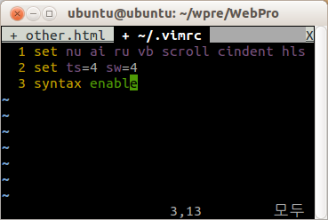
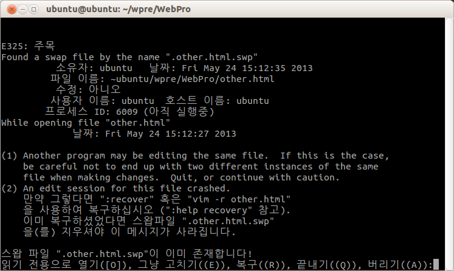
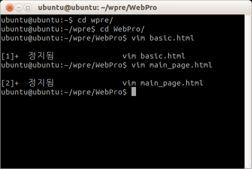
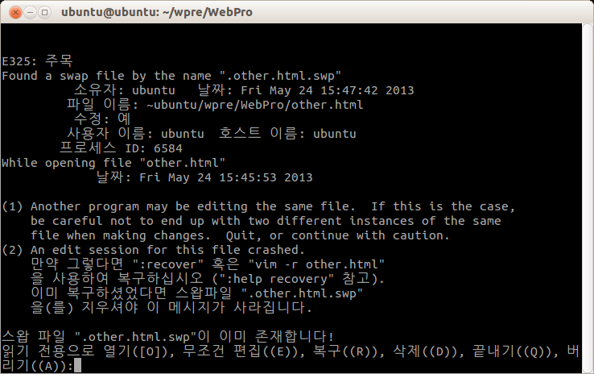
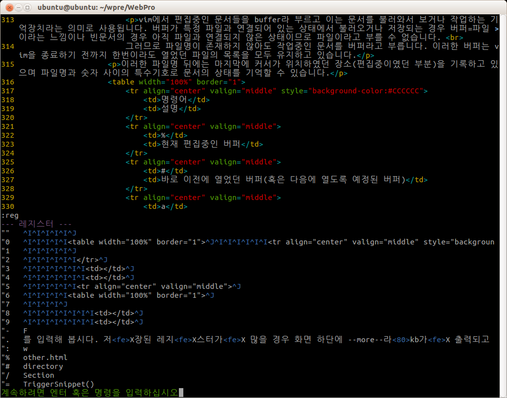
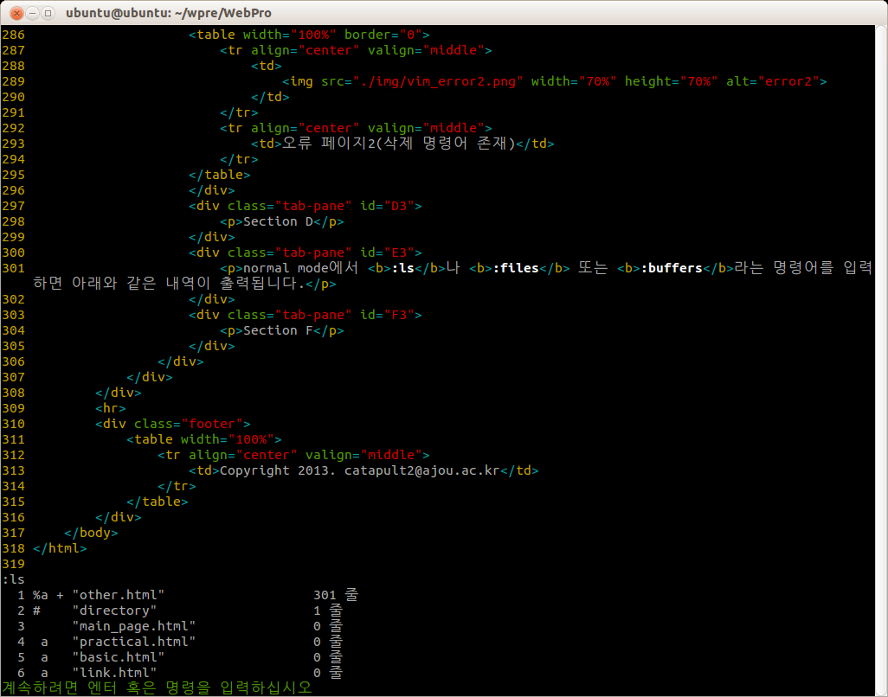

vim은 문서를 편집하는데 있어서 작업환경을 조작할 수 있는 변수를 가지고 있습니다.
이 페이지에서는 이와 관련된 옵션에 대해서 알아보겠습니다.
단, 옵션의 종류가 어떠한 것이 있는가에 대해서는 분량이 너무 많은 관계로 생략하도록 하겠습니다.
:set 이라는 명령어를 입력해 봅시다.
이는 현재 자신이 편집하고 있는 문서에 적용되는 옵션들을 보여줍니다.
만일 vim에 어떠한 옵션들이 있는가 확인하고자 한다면 :set all이라는 명령어를 입력해 봅시다. 사용가능한 옵션들이 출력될 것입니다.
이제 이러한 옵션들을 키고 끄는 방법에 대해 알아봅시다.
| 명령어 | 기능 |
| :set | 현재 편집중인 문서의 옵션을 보여줍니다 |
| :set all | 모든 옵션을 보여줍니다 |
| :set [name] | name에 해당하는 옵션을 실행시킵니다(on) |
| :set no[name] | name에 해당하는 옵션을 중지시킵니다(off) |
| :set [name]! | name에 해당하는 옵션의 상태를 바꿉니다(on<->off) |
| :set [name]=[#] | name에 해당하는 옵션의 값을 [#]으로 수정합니다 |
옵션의 설정 중 몇가지 집고 넘어가자면 수치를 설정해 줄때, name과=, #(value)사이에 공백이 존재해서는 안됩니다.
또한 수치가 필요한 옵션에서 이를 지정해주지 않을 경우 default값으로 옵션이 실행됩니다. 만일 여러 옵션을 한꺼번에 실행시키고 싶다면 :set name1 name2[=value] 와 같이 공백으로 이를 구분하면 됩니다.
편집과 관련된 몇가지 옵션의 예시를 아래에 보여드리겠습니다.
:set nu - (number)화면 좌측에 행의 번호를 보여주는 기능을 켭니다..
:set noai - (auto indent)자동 들여쓰기 기능을 끕니다.
:set cindent! - C style의 자동들여쓰기가 켜져 있으면 끄고, 꺼져 있으면 킵니다.
:set ts=4 - (tabstop)tab의 넓이를 4로 정합니다.
:set sw - (shiftwidth)개행되었을 시 자동으로 들여쓰는 너비를 지정합니다. 수치가 없으므로 default값으로 지정됩니다.
옵션 저장하기
만일 옵션을 설정한 이후 vim을 종료하면 이와 관련된 설정은 모두 초기화 됩니다.
때문에 이러한 옵션을 지속적으로 사용할 예정이라면 이를 저장할 필요가 있습니다.
우리는 홈 디렉터리에 vimrc라는 파일을 생성해 둠으로써 이를 저장 할 수 있습니다.
| OS | Home Directory |
| Windows XP | C:\Document and Setting\[User ID] |
| Windows 7 | C:\사용자\[User ID] |
| Unix or Linux or MAC | \home\[User ID] |
window 계열에서는 :e ~/_vimrc 라 입력하고, 기타 계열은 :e ~/.vimrc라 입력합시다.
:e 명령어는 이전 설명하였던 파일열기 명령어이며 ~은 위 테이블에서 설명한 home directory입니다. 이제 이렇게 생성된 문서에 옵션을 지정합시다.
|  |
| 제작자가 사용하는 옵션 목록 |
옵션을 지정할 때 주의할 점으로는 : 명령어를 사용하지 않아도 된다는 점입니다. 이는 자동으로 명령어 모드로 인식되기 때문이지요.
Vim이 자체적으로 가지는 기능은 매우 많습니다. 아래 이미지 이외에도 더 많은 명령어가 존재하지요.

|
| 출처:kldp.org |
우리는 :help [name]명령어로 이러한 기능에 대해서 알아 볼 수 있습니다.
예를들어 w에 대해 알고싶다면 :help w라 입력하면 됩니다. 한데 normal mode의 w와 command mode의 :w는 별개의 명령어입니다.
이를 구분하기 위한 접두어를 아래 테이블에 정리해 보았습니다.
| Mode | 접두어 | 예시 |
| Normal | 없음 | :help w |
| Command | : | :help :w |
| Insert | i_ | :help i_CTRL-N |
| Visual | v_ | :help v_u |
| vim 실행 인수 | - | :help -r |
| Option | ' | :help 'tabstop' |
| Command 특수키 | c_ | :help c_CTRL-B |
이외 2회 이상 입력에 대한 명령어의 경우 _로 이를 구분합니다.
:help CTRL-R_CTRL-F - Ctrl+R 입력 이후 Ctrl+F 입력
도움말 창은 창분할 기능으로 실행되기에 :q로 종료할 수 있습니다.
Vim이 정상적으로 종료되지 않았을 시, 혹은 누군가와 서버에서 중복으로 하나의 문서에 접근할 시 오류가 발생합니다.
|  |
| 오류 페이지 |
약간 이야기를 빠져나와서 리눅스 환경에서 Ctrl+Z 키는 현재 실행중인 프로세스를 정지시키는 명령어입니다.
Vim에서 이를 실행시켜 보면 편집 중이던 vim 문서가 정지되었음을 알 수 있습니다.
|  |
| vim 편집 중 Ctrl+Z 입력(2개의 문서가 정지됨) |
위 이미지는 vim으로 문서 2개를 편징 중 강제로 종료한 상황입니다. 정지됨(Stopped) 앞에 번호는 작업번호로 터미널에서 fg %[#] 이란 명령어로 다시 문서를 편집할 수 있습니다. 인수 없이 fg 명령어만 내릴 경우 가장 최근 실행한 문서를 불러옵니다.
다시 오류처리로 돌아와 이야기 하자면 첫번째 이미지에서 보듯 현재 문서가 아직실행중(still running) 임을 알 수 있습니다.
맨 아래 스왑파일이 존재하고 있기 때문이라고 하는데, 스왑 파일(.swp)에 대해 약간 설명하자면 vim 자체가 실행될 때, 스왑 파일을 함께 하나 생성하며 시작하고 이는 원 파일명 앞에 .을 붙여 숨김파일로 생성됩니다.
이는 편집과정의 내용이 저장되어 undo 연산시 실행되는 용도로 사용되며 vim이 정상적으로 저장될 시 이는 삭제됩니다. 하지만, vim이 정상적으로 종료되지 않았을 경우 동일한 파일을 열면 이를 생성할 수없으므로 이러한 에러가 발생하게 됩니다.
이에 대해 아래서 5가지 명령을 입력할 수 있는데 이에 대해 간략히 분류해 보면
| 명령어 | 실행 |
| O | (Open Read-Only)편집이 불가능한 읽기전용으로 파일을 엽니다 |
| E | (Edit anyway)모두 무시하고 파일을 편집합니다 |
| R | (Recover)복구 모드로 파일을 엽니다. 스왑파일이 원본 파일에 저장되지 못하였을 때 사용하며, 이전 원본파일의 복구 내용을 비교해 저장여부를 결정합니다. 복구 후에도 원본 스왑파일은 남아있게 되는데 이때에는 명령어에 (D)elete it이 추가되므로 이를 삭제하면 됩니다. |
| Q | (Quit)Vim을 종료합니다. |
| A | (Abort)Vim을 종료하며 core파일 생성이 가능시 이를 생성하고 종료합니다. |
|  |
| 오류 페이지2(삭제 명령어 존재) |
레지스터를 확인하기 위하여 :reg를 입력해 봅시다. 저장된 레지스터가 많을 경우 화면 하단에 --more--가 출력되고 이는 space나 enter를 통해 다음으로 넘어갈 수 있습니다.
|  |
| 현재 편집중인 문서의 레지스터 |
위의 이미지에서 레지스터의 이름은 겹따옴표로 시작하는 것을 볼 수 있습니다.
이 이미지의 레지스터는 문서의 삭제나 복사등을 함으로써 자동으로 생성되는 것으로 각 부분에 대해 설명하자면 크게 3부분으로 나눌 수 있습니다.
하나는 편집과정에서 복사 및 삭제를 하였던 데이터를 저장하는 레지스터, 둘째는 vim의 기능에 사용된 인수를 저장하는 레지스터, 마지막으로 파일 레지스터 입니다.
편집 관련 레지스터
편집에 사용된 레지스터의 경우 아래와 같이 구분합니다.
| 레지스터 이름 | 설명 |
| "" | 가장 최근 복사,삭제한 레지스터 |
| "0 | 가장 최근 복사한 데이터 |
| "1~"9 | 가장 최근에 삭제된 데이터(1번이 가장 최근) |
이렇게 기록에 남는 데이터들의 제사용 역시가능한데 "3p라는 명령어는 "3번 레지스터에 저장된 내용을 다시 붙여넣는다라는 의미를 지닙니다.
기능 관련 레지스터
이 레지스터는 기호로 구분하는데 아래와 같이 구분합니다
| 레지스터 이름 | 설명 |
| "- | 가장 최근 한 라인 이내로 삭제한 데이터 |
| "/ | 가장 최근 검색한 데이터 |
| ": | 가장 최근 command mode에서 내린 명령어 데이터(읽기전용) |
| ". | 가장 최근에 입력한 데이터(읽기전용) |
파일 관련 레지스터
| 레지스터 이름 | 설명 |
| "% | 현재 편집중인 파일명(읽기전용) |
| "# | 이전에 열었던 파일명(Ctrl+^ 사용시 열게 될 파일, 읽기전용) |
레지스터 사용하기
기본적인 레지스터 사용법에 대해 숙지하였으니 몇가지 확장된 기능에 대해 알아봅시다.
| 레지스터 이름 | 설명 |
| "{reg}y{motion} | {reg} 레지스터에 {motion}에 해당하는 부분을 복사합니다 |
| "{reg}p | {reg} 레지스터에 내용을 현재 커서 뒤에 붙여넣습니다 |
| "{reg}P | {reg} 레지스터에 내용을 현재 커서 앞에 붙여넣습니다 |
| "{reg}d{motion} | {reg} 레지스터에 {motion}에 해당하는 부분을 잘라 넣습니다 |
| Ctrl+r{reg} | 입력 모드에서만 사용가능하며 {reg} 레지스터를 붙여넣습니다 |
레지스터의 내용은 .viminfo에 저장되므로 종료 이후에도 다시 사용이 가능합니다.
normal mode에서 :ls나 :files 또는 :buffers라는 명령어를 입력하면 아래와 같은 내역이 출력됩니다.
|  |
| 하단 버퍼 목록 |
vim에서 편집중인 문서들을 buffer라 부르고 이는 문서를 불러와서 보거나 작업하는 기억장치라는 의미로 사용됩니다. 버퍼가 특정 파일과 연결되어 있는 상태에서 불러오거나 저장되는 경우 버퍼=파일 이라는 느낌이나 빈문서의 경우 아직 파일과 연결되지 않은 상태이므로 파일이라고 부를 수 없습니다.
그러므로 파일명이 존재하지 않아도 작업중인 문서를 버퍼라고 부릅니다. 이러한 버퍼는 vim을 종료하기 전까지 한번이라도 열었던 파일의 목록을 모두 유지하고 있습니다.
이러한 파일명 뒤에는 마지막에 커서가 위치하였던 장소(편집중이였던 부분)을 기록하고 있으며 파일명과 숫자 사이의 특수기호로 문서의 상태를 기억할 수 있습니다.
| 명령어 | 설명 |
| % | 현재 편집중인 버퍼 |
| # | 바로 이전에 열었던 버퍼(혹은 다음에 열도록 예정된 버퍼) |
| a | 활성화된 버퍼(현재 화면에 보이는 버퍼) |
| + | 변경 부분이 있는 버퍼 |
버퍼 목록에 파일 추가
일반적으로 한번 열었던 파일을 버퍼목록에 저장하게 되는 반면 임의로 버퍼에만 파일을 목록에 추가할 수 있습니다.
| 명령어 | 설명 |
| :n {pattern} | 지정된 pattenr으로 파일을 검색하여 목록에 추가하고 첫번째 검색된 파일을 보여줍니다 |
| {N}Ctrl+^ | (=:e #{N}){N}번째 파일 목록을 엽니다 |
| :0f | 현재 버퍼를 목록에서 제거합니다. 연결된 파일이 있다면 해제하여 [No Name]버퍼로 만듭니다 |
| :r [filename] | (=:read) filename을 끼워넣습니다 |
예를들어 :n *.txt라 명령할 경우 현재 디렉토리에서 확장자 txt에 해당하는 모든 파일을 찾아 목록에 추가하고 첫번째로 검색된 파일을 엽니다. 하위 디렉토리 검색을 원할 경우 **/*.txt와 같은 명령어를 활용할 수 있습니다.
응용으로 doc**/*.txt라는 명령어는 doc로 시작하는 디렉토리에서만 검색하는 방법도 존재합니다.
문서 내부의 파일명 인식
C나 JAVA와 같은 프로그래밍 언어를 편집할 경우 본문 내에 외부에서 정의된 파일을 호출하는 경우가 존재합니다. 이러할 경우 vim의 다음 명령어는 유용하게 사용될 수 있습니다.
| 명령어 | 설명 |
| gf | 커서 위치의 파일명을 인식하여 열어줍니다 |
| Ctrl+w f | 커서 위치의 파일명을 분할된 창에 열어줍니다 |
| Ctrl+w gf | 커서 위치의 파일명을 탭으로 열어줍니다 |
이 페이지에서는 기존 basic에서 생략된 문서편집기술을 다루겠습니다.
특정 위치로의 이동
| 명령어 | 설명 |
| 0 | 0번째 열로 이동 |
| ^ | 공백을 제외한 행의 시작부분으로 이동 |
| $ | 마지막 열(행의 끝) |
| w | (word forward)단어의 시작위치 혹은 문장부호의 경계를 따라 이동 |
| e | (end of word)w와 동일하나 문장의 끝부분에 위치 |
| b | (words backward)w와 동일하나 진행 방향이 역방향 |
| W, E, B | 기본 기능은 위와 동일하나 단어의 범위가 늘어납니다 |
마지막 W,E,B 의 경우, 예를 들어 특정 경로(C:\mydir\web\html.txt)가 존재할 시 w,e,b의 경우 C와 : 그리고 \를 따로 인식하여 다수의 입력 후 txt를 인식하는 반면 W,E,B는 경로 전체를 문장으로 인식함으로써 즉시 txt로 이동합니다.
괄호나 문단, 블록단위 이동
| 명령어 | 설명 |
| % | 가장 가까운 괄호의 짝으로 이동 |
| (, ) | 문장 단위의 시작위치, 끝으로 이동 |
| {, } | 문단 단위의 시작위치, 끝으로 이동 |
| [[, ]] | 블록 단위의 시작위치, 끝으로 이동 |
오퍼레이션 펜딩 모드(operation pending mode)
지금까지 dd나 yy와 같이 동일한 입력을 두번 하는 경우를 기억하실 겁니다. 이는 즉 처음 명령은 실행되나 뒤따라오는 두번째 명령을 입력받기 전까지 대기상태(pending)를 머문다는 뜻입니다.
이렇게 다른 명령을 입력받기 위해 대기하는 상태를 오퍼레이션 펜딩 모드라고 합니다.
아래 테이블은 삭제 명령어(d)의 오퍼레이션 펜딩모드의 예시입니다.
| 명령어 | 설명 |
| d$(or ^) | 현재 커서 위치부터 행 끝(or 처음)까지 삭제 |
| dd | 현재 행 삭제 |
| dj(or k) | 현재 행과 아래(or 위)행을 삭제 |
| dw(or e) | 현재 커서의 위치한 단어 하나의 끝(처음)까지 삭제 |
| d} | 현재 커서의 위치부터 문단의 끝까지 삭제 |
보시다 시피 d 뒤에 오는 명령어는 기존의 커서이동 명령어가 상당수 존재합니다. 이러한 오퍼레이션 펜딩 모드의 시작으로는 위의 d 이외에 y, c가 대표적인 명령어 입니다.
이외 편리한 편집기능
{visual block} =이라는 기능이 존재합니다. 이는 visual mode로 영역을 선택한 다음 = 키를 사용할 경우 자동으로 문장의 들여쓰기가 정렬됩니다. 프로그래밍 언어를 사용하는 사람에게 있어 유용한 기능 중 하나입니다.
혹 프로그래밍 언어를 사용하고 있다면 Ctrl+n으로 기존 정의하였던 변수들을 호출할 수 있습니다. 예를 들어서 int practical; 이라는 변수를 지정하고 pr을 입력한 다음 ctrl+n을 누르면 자동으로 코드가 완성되는 것을 볼 수 있습니다.